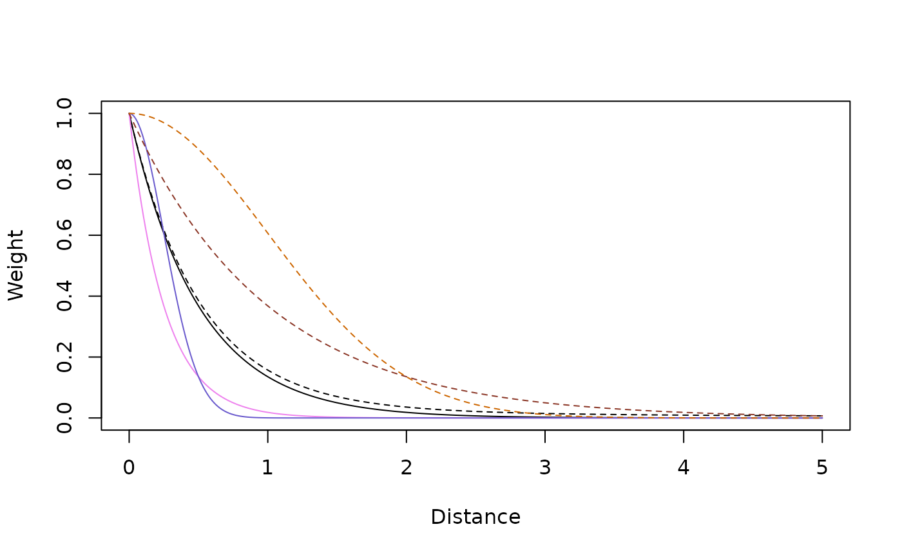

The Microsimulation Landscape
landscapes.Rmd
Kernel Shapes
dd = seq(0, 5, by = 0.01)
k1 = make_kF_mix(0, 2, 1, 1.5)
k2 = make_kF_mix(0.1, 2, 1, delta=1.5)
k3 = make_kF_mix(0, 2, 1, s1=.5)
k4 = make_kF_mix(0, 2, 1, s1=.5, gamma=2)
k5 = make_kF_mix(0, 2, 1, s1=2)
k6 = make_kF_mix(0, 2, 1, s1=2, gamma=2)
plot(dd, k1(dd), type = "l", xlab = "Distance", ylab = "Weight")
lines(dd, k2(dd), lty = 2)
lines(dd, k3(dd), col = "violet")
lines(dd, k4(dd), col = "slateblue")
lines(dd, k5(dd), col = "tomato4", lty=2)
lines(dd, k6(dd), col = "darkorange3", lty=2)